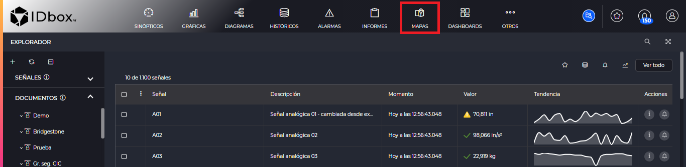
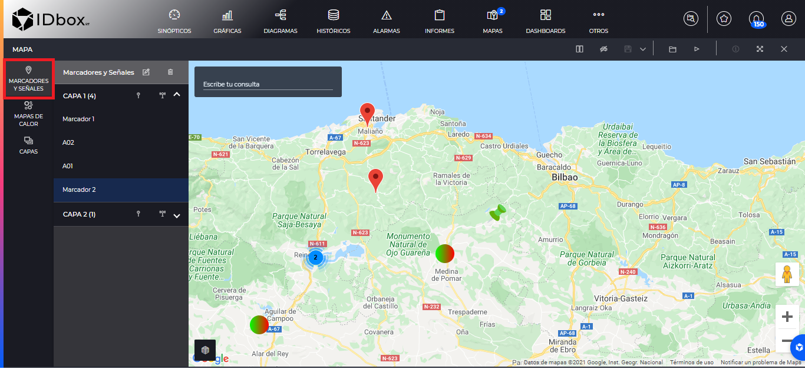
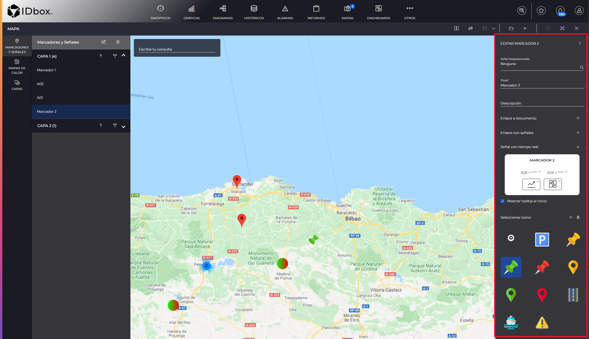
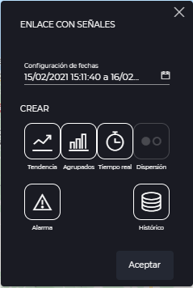
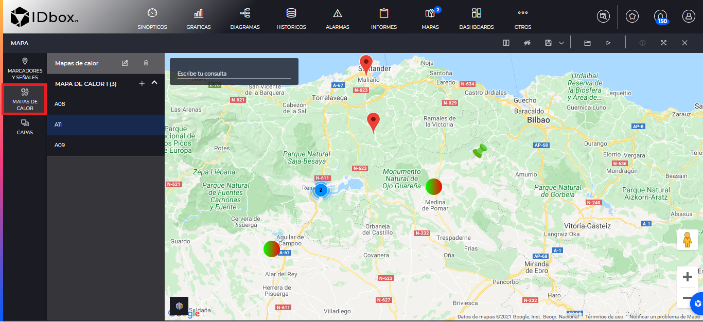
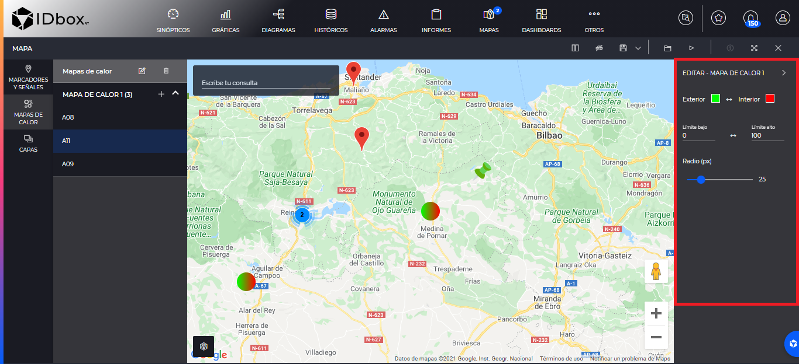
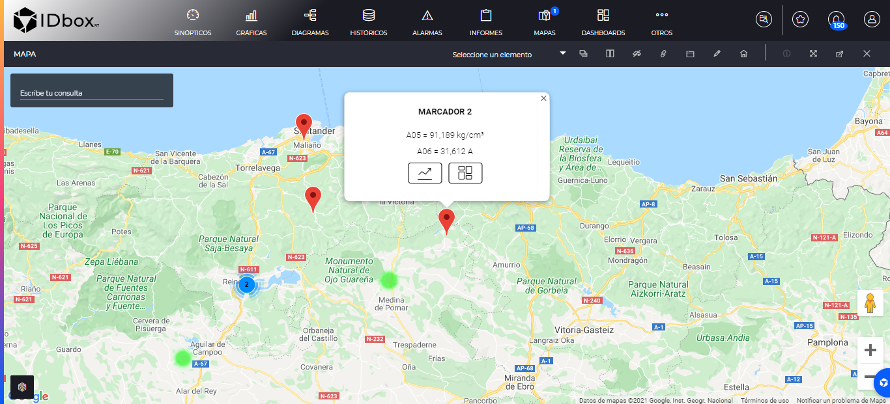
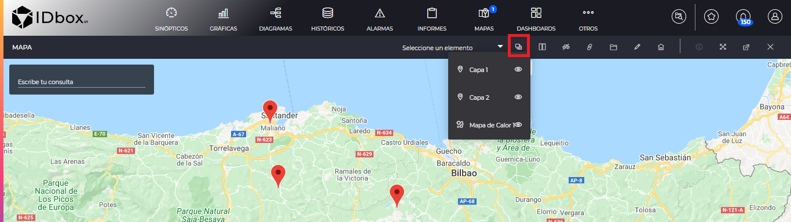
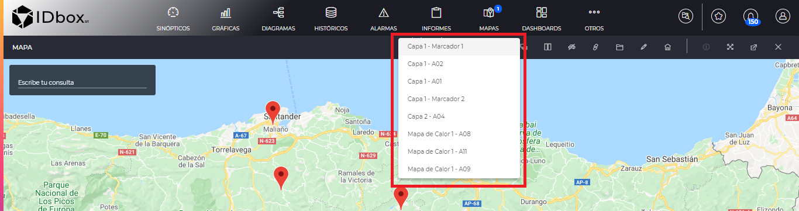
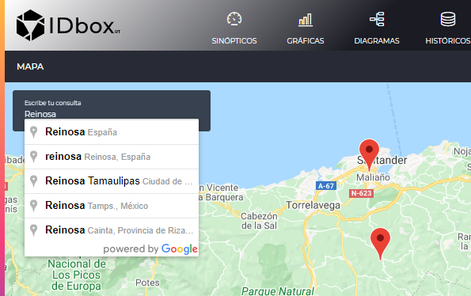

MAPAS
- 1 Introduction
- 2 Editor
- 2.1 Layer management
- 2.2 Markers and signs
- 2.3 Heat maps
- 3 Viewer
- 4 Display options
1. Introduction
Maps will allow us to visualize markers with signs or heat maps that are geographically positioned.
They can be created from the shortcuts section. Clicking on this option will open a new map.

2 Editor
The map editor will allow us to create the document to our needs, adding layers that will contain markers with signs, heat maps or kmls.
Once we finish making all the changes on the map we will be able to save it by clicking on the save button on the toolbar.
2.1 Layer management
The layers will allow us to organize our markers or heat maps so that the points of the map are grouped together. It will also allow us to inject kml type files into the map.
To access the layer management, click on “Layers” in the left side menu.
Here we will list the layers that we have available on this map. Each of the layers on the right side has the . If we click on it, it will hide all the elements of that layer on the map and will change the icon to . If we click again on this icon, it will show us the elements of the layer on the map.
On the other hand we have the following functionalities:
- Add layer: It will allow us to add layers. It will open an auxiliary window in which we will introduce the name of the layer and its type. In the case of wanting to add a kml file to the map we will have to select that file from our system.
- Edit layer: It will allow us to rename the selected layer.
- Delete layer: It will allow us to delete the selected layer. If it has elements, we will get a warning message to confirm that we will delete all the elements of the layer with it.
- The up layer and down layer buttons allow us to reorder the layers in the list.
2.2 Markers and signs
We will enter the “Markers and Signals” section by clicking on the left panel in the same.

All visible layers that are of type “Markers and Signals” will be listed here.
We will be able to add a new marker with the “New Marker” button of the layer we want to add it to. The marker will be geopositioned in the center of the current map. Once added we could drag the marker to a different geoposition.
The “New Signal” button , will open the signal selector, so that we can select one or several signals. This will add one or several markers, each one with a signal already geopositioned and showing its real time. Therefore the geopositioning of these markers will be given by the geopositioning of the signal. If the signal has never been geopositioned in any map, saving this map will be when the signal’s geoposition is assigned. If a signal is dragged to another geoposition, that will be its geoposition in all maps, when we save this map.
We can select a marker by clicking on it. This will center the map on that particular marker.
If the markers are very close together they will be automatically grouped at a point and we will have to zoom in if we want to see them (if they are exactly at the same latitude and longitude, we will have to move one before adding the next one).
We will be able to delete a specific marker by selecting a marker and clicking on the delete button.
Once the marker has been added we can edit it by clicking on the edit button.
When editing a bookmark we will see the following right panel:

The marker options are:
- Geopositioned Signal: Indicates the signal that geopositions the marker on the map.
- Title: Marker title.
- Description: To write annotations about this marker.
- Link to document: It will allow us to have links to existing documents in the marker. It will open the document selector to select the document.
- Link with signals: The links with signals that are created in a marker will be associated to the real time signals that are established in this marker. When we click on this button a window will open in which we will select the dates and the link we want to put. For example, if we put a link to a trend chart, when we click in viewer mode on that link it will take us to the trend chart with the signals that have been set in this marker.
 * Signal with real time: We will be able to add signals to see their real time in the map viewer mode. In addition these signals serve as parameter for the “Links with signals”. * Marker preview: Here we will preview how the marker will look like when we see it in the viewer mode, with its signals in real time and links. * Show tooltip at startup: If this check is enabled, the marker will open when we enter the map in viewer mode. * Icon selection: We will be able to modify the icon of our marker. Also with the add and delete buttons we can add our own custom icons by selecting them from our team or delete them.
2.3 Heat maps
The map allows us to register heat maps to see at a glance which signals have more value than others. To list all visible heatmaps click on the “Heatmaps” section in the left panel.

With the add button , we will associate signals to the heat map. This will open the signal selector so that we can choose which signals we want in this heat map.
We will be able to delete any of the signals by selecting it and pressing the delete button.
In case of the editor we will not see the heat map as such, but where its points are positioned. To edit the heat map, select any of its points and press the edit button. This will open the right panel of the heat map.

From this panel we can configure how the heat map will be displayed in the viewer with the following options:
- Outer and inner: define the colors to be used in the outermost and innermost layer of the heat map respectively. We can press the swap button to swap these colors.
- Low and high limits: will indicate the limits of the signal value at which the colors will reach their minimum and maximum. We can swap these values using the swap button .
- Radius: It will indicate the radius of each point of the heat map. The value is in pixels.
3 Viewer
When we open a map type document or click on the “Preview” button in the editor toolbar . We will see the map as we have defined it. We will see all visible layers of markers and signs, heatmaps or kmls.
We will be able to interact with the markers to open and close them and to show us the information we defined in the viewer or to take us to a link if we click on it. In addition we will be able to visualize the values that will form the heat maps.

We can also hide the layers or show the layers as we did from the Layer management section, using the toolbar:

Finally we will be able to move between the elements using the “Select an element” combo. This will show us all the marker nodes and heat maps available and will take us to it once we click on it.

4 Display and query options
Both in the viewer and in the editor we will be able to change some options to visualize it in a different way. The difference is that if we change them in the editor they will be saved together with the map. The options are the following:
- StreetView: This option is located in the toolbar and will split the screen to show us the street view on the right. In addition we will have to drag the orange man to the place where we want on the map.
- Show traffic: Located in the toolbar, it will show the traffic on the map. Once shown we will be able to hide it again by means of the same button that will have changed to “Hide traffic”.
- Map Type: This option can be found at the bottom left of the map. This will open a drop-down menu in which we will select the type of map we want to see among the following options: “Street map”, “Terrain”, “Satellite”, “Satellite with labels”.
In addition, within the map we can search for a specific place so that the center of the map is located in that place using the “Write your query” functionality.
